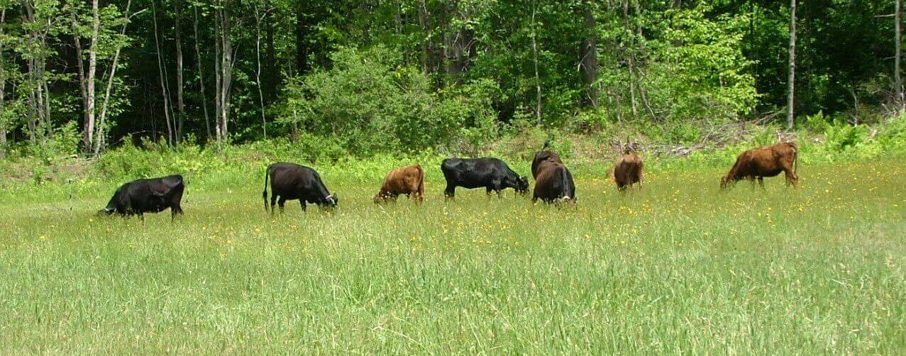
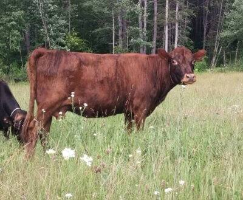
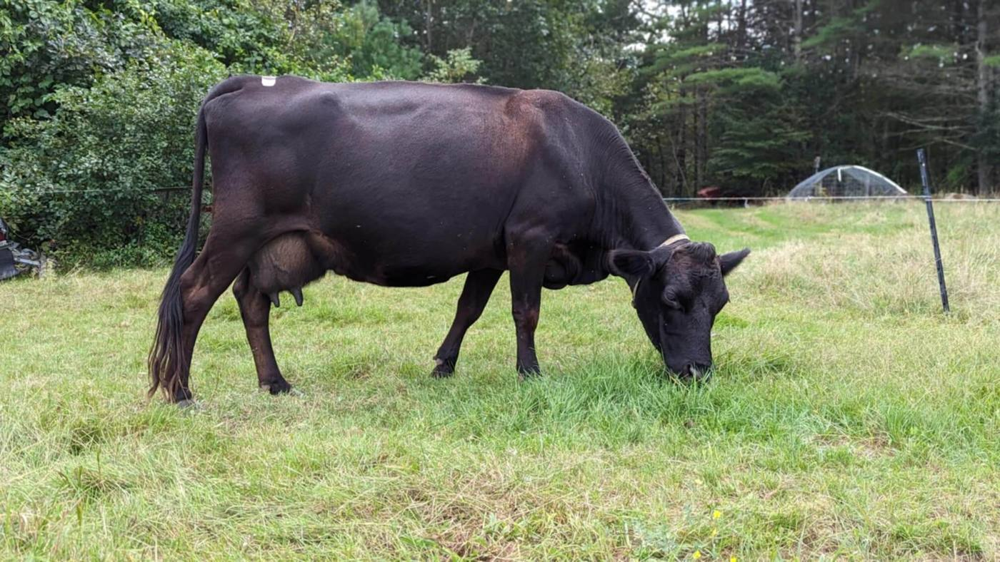
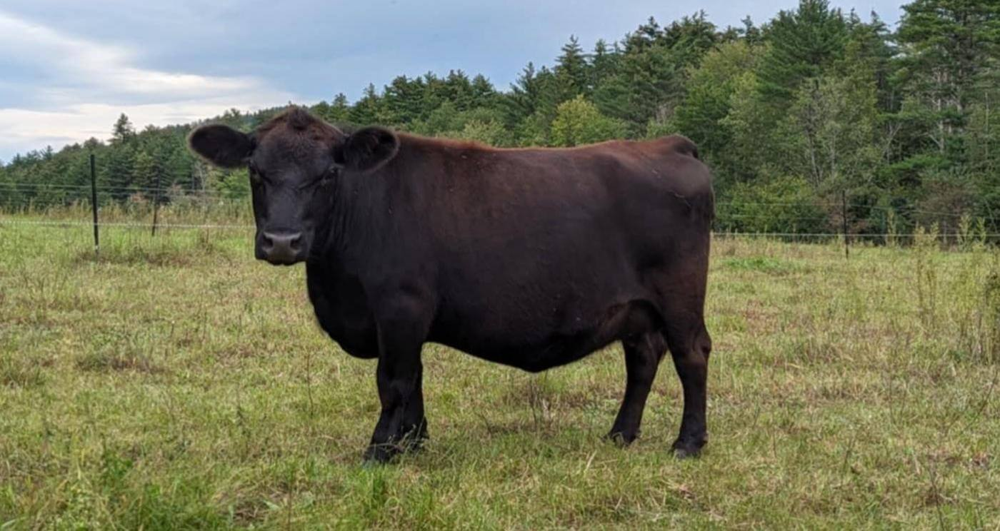
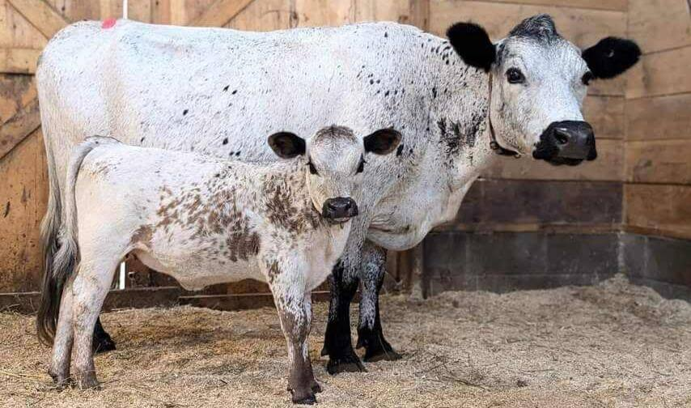
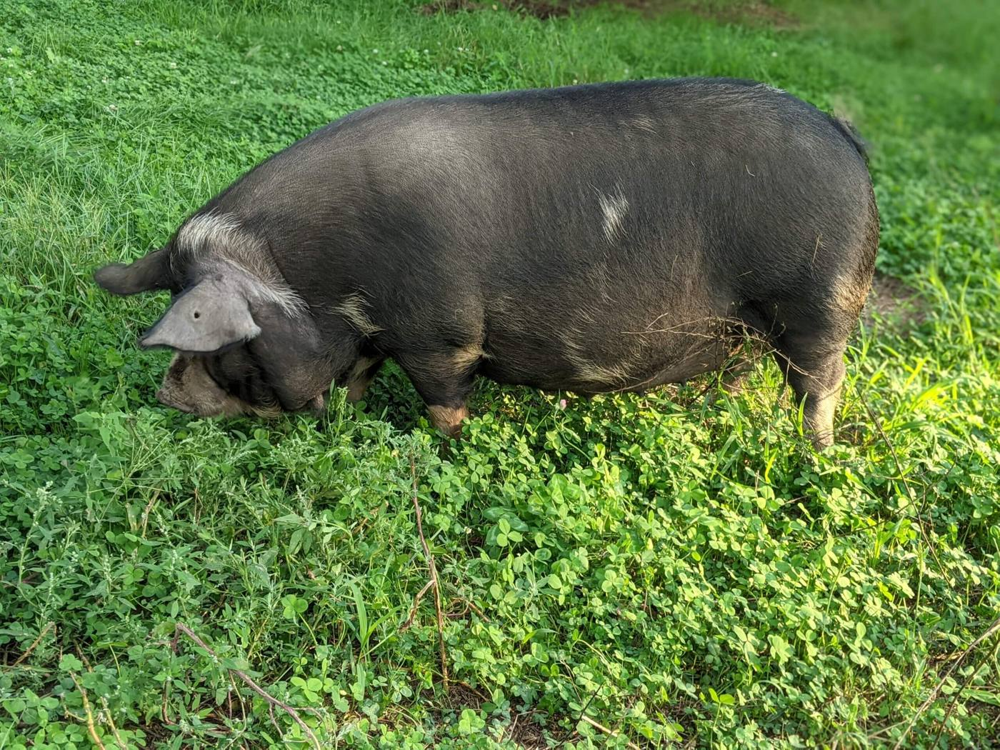
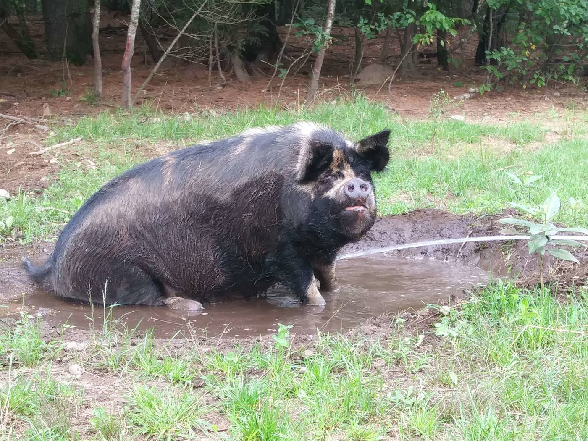
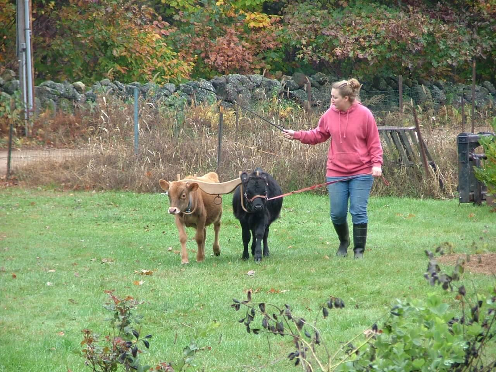

<title>Courser Meadows Website Looks</title>
<meta name="claude:viewport-fit-sides" content="cover">
<link rel="preconnect" href="https://fonts.googleapis.com">
<link rel="preconnect" href="https://fonts.gstatic.com" crossorigin>
<link rel="stylesheet" href="https://fonts.googleapis.com/css2?family=Figtree:wght@400;500;600;700&family=Big+Shoulders+Display:wght@700;800;900&family=Public+Sans:wght@400;500;600;700&family=Young+Serif&family=Atkinson+Hyperlegible:wght@400;700&family=IBM+Plex+Mono:wght@400;500&family=Gloock&family=Source+Serif+4:ital,opsz,wght@0,8..60,400;0,8..60,600;1,8..60,400&family=Archivo:wdth,wght@75..100,500;75..100,600;75..100,700&display=swap">
<style>
/* Layout: a plain review frame (tabs + notes) around three full website mockups,
   each a self-contained world with its own fixed palette and type. */
:root {
  --frame-bg: #f5f6f3;
  --frame-surface: #ffffff;
  --frame-fg: #1d211c;
  --frame-muted: #5d655a;
  --frame-line: #d9ddd4;
  --frame-accent: #2f5c3e;
  --frame-accent-fg: #ffffff;
  --font-frame: "Figtree", system-ui, sans-serif;
}
@media (prefers-color-scheme: dark) {
  :root:not([data-theme="light"]) {
    --frame-bg: #151814; --frame-surface: #1e221d; --frame-fg: #e8ebe4;
    --frame-muted: #a2aa9e; --frame-line: #343a32; --frame-accent: #8cc09b; --frame-accent-fg: #10200f;
    color-scheme: dark;
  }
}
:root[data-theme="dark"] {
  --frame-bg: #151814; --frame-surface: #1e221d; --frame-fg: #e8ebe4;
  --frame-muted: #a2aa9e; --frame-line: #343a32; --frame-accent: #8cc09b; --frame-accent-fg: #10200f;
  color-scheme: dark;
}
* { box-sizing: border-box; }
body {
  background: var(--frame-bg); color: var(--frame-fg); font-family: var(--font-frame);
  font-size: 16px; line-height: 1.5;
}
.frame { max-width: 1180px; margin: 0 auto; padding-block: 28px 64px;
  padding-left: max(16px, env(safe-area-inset-left, 0px)); padding-right: max(16px, env(safe-area-inset-right, 0px));
  display: grid; gap: 24px; }
.frame h1 { font-size: clamp(1.6rem, 4vw, 2.2rem); line-height: 1.15; margin: 0; text-wrap: balance; font-weight: 700; }
.frame .lede { margin: 0; max-width: 62ch; color: var(--frame-muted); font-size: 1.05rem; }
.intro { display: grid; gap: 10px; }

.tabs { display: flex; gap: 8px; flex-wrap: wrap; }
.tab { font: inherit; font-weight: 600; cursor: pointer; border: 1px solid var(--frame-line);
  background: var(--frame-surface); color: var(--frame-fg); border-radius: 999px; padding: 10px 18px;
  display: inline-flex; gap: 8px; align-items: baseline; }
.tab small { font-weight: 500; color: var(--frame-muted); }
.tab[aria-selected="true"] { background: var(--frame-accent); color: var(--frame-accent-fg); border-color: var(--frame-accent); }
.tab[aria-selected="true"] small { color: inherit; opacity: .85; }
.tab:focus-visible, .frame a:focus-visible, .frame button:focus-visible { outline: 3px solid var(--frame-accent); outline-offset: 2px; }

.notes { display: grid; grid-template-columns: repeat(3, minmax(0, 1fr)); gap: 16px;
  background: var(--frame-surface); border: 1px solid var(--frame-line); border-radius: 12px; padding: 18px 20px; }
.notes div { display: grid; gap: 2px; min-width: 0; }
.notes dt { font-size: .75rem; text-transform: uppercase; letter-spacing: .08em; color: var(--frame-muted); font-weight: 600; }
.notes dd { margin: 0; }
@media (max-width: 720px) { .notes { grid-template-columns: 1fr; } }

.browser { border: 1px solid var(--frame-line); border-radius: 12px; overflow: hidden; background: var(--frame-surface);
  box-shadow: 0 1px 2px rgb(0 0 0 / .05), 0 12px 32px -12px rgb(0 0 0 / .18); }
.browser-bar { display: flex; align-items: center; gap: 10px; padding: 9px 14px; border-bottom: 1px solid var(--frame-line); font-size: .8rem; color: var(--frame-muted); }
.browser-bar i { width: 10px; height: 10px; border-radius: 50%; background: var(--frame-line); display: inline-block; }
.browser-bar span { margin-left: 6px; background: var(--frame-bg); border-radius: 6px; padding: 3px 10px; min-width: 0; overflow: hidden; text-overflow: ellipsis; white-space: nowrap; }
.site { container-type: inline-size; }

.after { display: grid; gap: 12px; background: var(--frame-surface); border: 1px solid var(--frame-line); border-radius: 12px; padding: 20px; }
.after h2 { margin: 0; font-size: 1.15rem; }
.after ol { margin: 0; padding-left: 1.2em; display: grid; gap: 6px; max-width: 70ch; }
.after p { margin: 0; color: var(--frame-muted); max-width: 70ch; }
.fineprint { font-size: .85rem; color: var(--frame-muted); margin: 0; max-width: 75ch; }

/* Shared mockup bits */
.site img { display: block; width: 100%; height: 100%; object-fit: cover; }
.site :where(a) { color: inherit; }
.site .dot { width: .6em; height: .6em; border-radius: 50%; display: inline-block; background: #c4472f; flex: none; }
.site [data-open="true"] .dot { background: #3fa35b; }
.sample { font-size: .72rem; letter-spacing: .04em; opacity: .75; font-style: normal; }

/* ============ Option 1: Farm Stand ============ */
.fs {
  --fs-blue: #1e3d58; --fs-white: #fbfaf6; --fs-hay: #e4b43d; --fs-ink: #15212c; --fs-line: #cfd7de; --fs-soft: #eef1f3;
  --fs-sign: "Big Shoulders Display", "Arial Narrow", sans-serif; --fs-body: "Public Sans", system-ui, sans-serif;
  background: var(--fs-white); color: var(--fs-ink); font-family: var(--fs-body); font-size: 16px;
}
.fs-status { background: var(--fs-hay); color: var(--fs-ink); display: flex; flex-wrap: wrap; gap: 4px 16px; align-items: center; padding: 8px clamp(16px, 4cqi, 40px); font-weight: 600; font-size: .9rem; }
.fs-status .call { margin-left: auto; }
.fs-nav { background: var(--fs-blue); color: var(--fs-white); display: flex; flex-wrap: wrap; align-items: center; gap: 8px 24px; padding: 14px clamp(16px, 4cqi, 40px); }
.fs-logo { font-family: var(--fs-sign); font-weight: 900; font-size: 1.6rem; letter-spacing: .02em; text-transform: uppercase; line-height: 1; }
.fs-nav ul { list-style: none; margin: 0 0 0 auto; padding: 0; display: flex; flex-wrap: wrap; gap: 4px 20px; font-size: .92rem; font-weight: 500; }
.fs-hero { display: grid; grid-template-columns: 1.1fr 1fr; background: var(--fs-blue); color: var(--fs-white); }
.fs-sign { padding: clamp(28px, 6cqi, 64px) clamp(16px, 4cqi, 40px); display: grid; gap: 18px; align-content: center; border-top: 2px solid rgb(255 255 255 / .15); }
.fs-sign .eyebrow { font-weight: 600; text-transform: uppercase; letter-spacing: .14em; font-size: .78rem; color: var(--fs-hay); }
.fs-sign h2 { font-family: var(--fs-sign); font-weight: 900; text-transform: uppercase; font-size: clamp(3rem, 9cqi, 6.2rem); line-height: .88; margin: 0; letter-spacing: .01em; }
.fs-sign h2 em { font-style: normal; color: var(--fs-hay); }
.fs-sign p { margin: 0; max-width: 40ch; font-size: 1.05rem; opacity: .92; }
.fs-hours { display: flex; flex-wrap: wrap; gap: 10px; }
.fs-btn { display: inline-flex; align-items: center; gap: 8px; background: var(--fs-hay); color: var(--fs-ink); font-weight: 700; padding: 12px 18px; border-radius: 4px; text-decoration: none; }
.fs-btn.ghost { background: transparent; color: var(--fs-white); box-shadow: inset 0 0 0 2px rgb(255 255 255 / .5); }
.fs-photo { min-height: 260px; }
.fs-board { padding: clamp(28px, 5cqi, 56px) clamp(16px, 4cqi, 40px); display: grid; gap: 22px; }
.fs-board-head { display: flex; flex-wrap: wrap; align-items: end; justify-content: space-between; gap: 8px 20px; }
.fs-board-head h3 { font-family: var(--fs-sign); font-weight: 800; text-transform: uppercase; font-size: clamp(2rem, 5cqi, 3rem); margin: 0; line-height: 1; color: var(--fs-blue); }
.fs-cols { display: grid; grid-template-columns: repeat(3, minmax(0, 1fr)); gap: 28px; }
.fs-cat h4 { margin: 0 0 8px; font-family: var(--fs-sign); font-weight: 800; text-transform: uppercase; letter-spacing: .03em; font-size: 1.35rem; color: var(--fs-blue); border-bottom: 3px solid var(--fs-blue); padding-bottom: 4px; }
.fs-cat ul { list-style: none; margin: 0; padding: 0; display: grid; }
.fs-cat li { display: flex; align-items: baseline; gap: 6px; padding: 7px 0; border-bottom: 1px solid var(--fs-line); font-size: .95rem; }
.fs-cat li::after { content: none; }
.fs-cat .name { min-width: 0; }
.fs-cat .lead { flex: 1; border-bottom: 2px dotted var(--fs-line); transform: translateY(-4px); min-width: 12px; }
.fs-cat .price { font-weight: 700; font-variant-numeric: tabular-nums; white-space: nowrap; }
.fs-cat .note { display: block; font-size: .78rem; color: #5a6772; }
.fs-cat li.out .name, .fs-cat li.out .price { color: #8b96a0; text-decoration: line-through; }
.fs-cat li.out .tag { font-size: .7rem; font-weight: 700; text-transform: uppercase; background: var(--fs-soft); padding: 2px 6px; border-radius: 3px; color: #5a6772; }
.fs-reserve { background: var(--fs-soft); border-left: 6px solid var(--fs-hay); padding: 16px 20px; display: flex; flex-wrap: wrap; gap: 8px 20px; align-items: center; justify-content: space-between; }
.fs-reserve p { margin: 0; max-width: 56ch; }
.fs-reserve strong { font-family: var(--fs-sign); font-size: 1.6rem; letter-spacing: .02em; font-variant-numeric: tabular-nums; }
.fs-more { display: grid; grid-template-columns: repeat(3, minmax(0, 1fr)); gap: 1px; background: var(--fs-line); border-top: 1px solid var(--fs-line); }
.fs-more a { background: var(--fs-white); padding: 22px clamp(16px, 3cqi, 28px); text-decoration: none; display: grid; gap: 4px; }
.fs-more b { font-family: var(--fs-sign); font-weight: 800; text-transform: uppercase; font-size: 1.3rem; color: var(--fs-blue); }
.fs-more span { font-size: .92rem; color: #4a5763; }
.fs-foot { background: var(--fs-ink); color: #c9d3db; padding: 22px clamp(16px, 4cqi, 40px); display: flex; flex-wrap: wrap; gap: 8px 32px; font-size: .9rem; }
.fs-foot b { color: var(--fs-white); }
@container (max-width: 760px) {
  .fs-hero { grid-template-columns: 1fr; }
  .fs-photo { min-height: 200px; max-height: 240px; }
  .fs-cols, .fs-more { grid-template-columns: 1fr; }
  .fs-nav ul { margin-left: 0; }
}

/* ============ Option 2: Herd Book ============ */
.hb {
  --hb-paper: #f2f4ee; --hb-card: #fbfcf8; --hb-green: #1f3b2b; --hb-brindle: #8c3d1f; --hb-sky: #d6e3e6; --hb-line: #cfd6c8; --hb-muted: #56614f;
  --hb-display: "Young Serif", Georgia, serif; --hb-body: "Atkinson Hyperlegible", system-ui, sans-serif; --hb-mono: "IBM Plex Mono", ui-monospace, monospace;
  background: var(--hb-paper); color: var(--hb-green); font-family: var(--hb-body); font-size: 16px;
}
.hb-status { display: flex; flex-wrap: wrap; align-items: center; gap: 4px 14px; padding: 8px clamp(16px, 4cqi, 40px); background: var(--hb-green); color: var(--hb-paper); font-size: .88rem; }
.hb-status .call { margin-left: auto; font-family: var(--hb-mono); }
.hb-nav { display: flex; flex-wrap: wrap; gap: 8px 24px; align-items: baseline; padding: 18px clamp(16px, 4cqi, 40px); border-bottom: 1px solid var(--hb-line); }
.hb-logo { font-family: var(--hb-display); font-size: 1.5rem; }
.hb-logo small { font-family: var(--hb-mono); font-size: .72rem; color: var(--hb-muted); margin-left: 8px; letter-spacing: .04em; }
.hb-nav ul { list-style: none; margin: 0 0 0 auto; padding: 0; display: flex; flex-wrap: wrap; gap: 4px 20px; font-size: .95rem; }
.hb-hero { display: grid; grid-template-columns: minmax(0, 1fr) minmax(0, 1.15fr); gap: clamp(20px, 4cqi, 48px); align-items: center; padding: clamp(28px, 5cqi, 56px) clamp(16px, 4cqi, 40px); }
.hb-hero h2 { font-family: var(--hb-display); font-weight: 400; font-size: clamp(2.2rem, 5.6cqi, 3.8rem); line-height: 1.04; margin: 0 0 16px; text-wrap: balance; }
.hb-hero p { margin: 0 0 20px; max-width: 46ch; font-size: 1.06rem; color: var(--hb-muted); }
.hb-hero .actions { display: flex; flex-wrap: wrap; gap: 10px; }
.hb-btn { display: inline-flex; padding: 11px 18px; border-radius: 6px; background: var(--hb-green); color: var(--hb-paper); text-decoration: none; font-weight: 700; }
.hb-btn.alt { background: transparent; color: var(--hb-green); box-shadow: inset 0 0 0 2px var(--hb-green); }
.hb-hero figure { margin: 0; aspect-ratio: 16 / 10; max-width: 100%; border-radius: 8px; overflow: hidden; }
.hb-section { padding: 0 clamp(16px, 4cqi, 40px) clamp(32px, 5cqi, 56px); display: grid; gap: 18px; }
.hb-section-head { display: flex; flex-wrap: wrap; justify-content: space-between; align-items: baseline; gap: 6px 20px; border-top: 2px solid var(--hb-green); padding-top: 14px; }
.hb-section-head h3 { margin: 0; font-family: var(--hb-display); font-weight: 400; font-size: 1.7rem; }
.hb-section-head span { font-family: var(--hb-mono); font-size: .8rem; color: var(--hb-muted); }
.hb-grid { display: grid; grid-template-columns: repeat(4, minmax(0, 1fr)); gap: 16px; }
.hb-card { background: var(--hb-card); border: 1px solid var(--hb-line); border-radius: 8px; overflow: hidden; display: grid; grid-template-rows: auto 1fr; }
.hb-card figure { margin: 0; aspect-ratio: 4 / 3; max-width: 100%; }
.hb-card .body { padding: 12px 14px 14px; display: grid; gap: 8px; align-content: start; }
.hb-card .top { display: flex; justify-content: space-between; align-items: baseline; gap: 8px; }
.hb-card h4 { margin: 0; font-family: var(--hb-display); font-weight: 400; font-size: 1.35rem; }
.hb-card .role { font-size: .85rem; color: var(--hb-muted); }
.hb-card dl { margin: 0; display: grid; grid-template-columns: auto 1fr; gap: 2px 10px; font-family: var(--hb-mono); font-size: .74rem; }
.hb-card dt { color: var(--hb-muted); }
.hb-card dd { margin: 0; min-width: 0; }
.pill { font-family: var(--hb-mono); font-size: .68rem; text-transform: uppercase; letter-spacing: .06em; padding: 3px 7px; border-radius: 999px; white-space: nowrap; background: var(--hb-sky); color: var(--hb-green); }
.pill.avail { background: var(--hb-brindle); color: #fff; }
.hb-sale { display: grid; grid-template-columns: minmax(0, 1.2fr) minmax(0, 1fr); gap: 0; border: 1px solid var(--hb-line); border-radius: 8px; overflow: hidden; background: var(--hb-card); }
.hb-sale .text { padding: clamp(18px, 3cqi, 28px); display: grid; gap: 12px; align-content: start; }
.hb-sale h4 { margin: 0; font-family: var(--hb-display); font-weight: 400; font-size: 1.6rem; }
.hb-sale p { margin: 0; color: var(--hb-muted); max-width: 52ch; }
.hb-sale table { border-collapse: collapse; width: 100%; font-variant-numeric: tabular-nums; }
.hb-sale td { padding: 8px 0; border-bottom: 1px solid var(--hb-line); }
.hb-sale td:last-child { text-align: right; font-family: var(--hb-mono); font-weight: 500; white-space: nowrap; padding-left: 12px; }
.hb-sale figure { margin: 0; min-height: 220px; }
.hb-store { display: flex; flex-wrap: wrap; gap: 10px 28px; align-items: center; justify-content: space-between; background: var(--hb-sky); border-radius: 8px; padding: 18px 22px; }
.hb-store p { margin: 0; max-width: 60ch; }
.hb-foot { border-top: 1px solid var(--hb-line); padding: 20px clamp(16px, 4cqi, 40px); font-family: var(--hb-mono); font-size: .8rem; color: var(--hb-muted); display: flex; flex-wrap: wrap; gap: 6px 28px; }
@container (max-width: 900px) { .hb-grid { grid-template-columns: repeat(2, minmax(0, 1fr)); } }
@container (max-width: 640px) {
  .hb-hero, .hb-sale { grid-template-columns: 1fr; }
  .hb-nav ul { margin-left: 0; }
  .hb-grid { gap: 12px; }
}
@container (max-width: 420px) { .hb-grid { grid-template-columns: 1fr; } }

/* ============ Option 3: Field Guide ============ */
.fg {
  --fg-page: #fafaf6; --fg-ink: #283325; --fg-muted: #5e6659; --fg-ochre: #a8741f; --fg-moss: #3c4d34; --fg-rule: #dddcd0; --fg-tint: #eff0e6;
  --fg-display: "Gloock", Georgia, serif; --fg-body: "Source Serif 4", Georgia, serif; --fg-label: "Archivo", "Arial Narrow", sans-serif;
  background: var(--fg-page); color: var(--fg-ink); font-family: var(--fg-body); font-size: 17px;
}
.fg-status { display: flex; flex-wrap: wrap; gap: 4px 14px; align-items: center; padding: 7px clamp(16px, 4cqi, 40px); font-family: var(--fg-label); font-stretch: 85%; font-weight: 600; font-size: .85rem; letter-spacing: .02em; background: var(--fg-moss); color: var(--fg-page); }
.fg-status .call { margin-left: auto; }
.fg-nav { display: flex; flex-wrap: wrap; justify-content: space-between; align-items: center; gap: 8px 24px; padding: 16px clamp(16px, 4cqi, 40px); font-family: var(--fg-label); font-stretch: 85%; }
.fg-logo { font-family: var(--fg-display); font-size: 1.5rem; font-stretch: normal; }
.fg-nav ul { list-style: none; margin: 0; padding: 0; display: flex; flex-wrap: wrap; gap: 4px 22px; font-weight: 600; text-transform: uppercase; letter-spacing: .08em; font-size: .78rem; }
.fg-hero { position: relative; min-height: clamp(300px, 52cqi, 520px); display: grid; align-items: end; color: #fff; }
.fg-hero figure { position: absolute; inset: 0; margin: 0; }
.fg-hero figure::after { content: ""; position: absolute; inset: 0; background: linear-gradient(to top, rgb(20 26 18 / .82), rgb(20 26 18 / .1) 60%); }
.fg-hero .text { position: relative; padding: clamp(24px, 5cqi, 56px) clamp(16px, 4cqi, 40px); display: grid; gap: 12px; max-width: 900px; }
.fg-kicker { font-family: var(--fg-label); font-stretch: 85%; text-transform: uppercase; letter-spacing: .14em; font-weight: 600; font-size: .78rem; color: #f0d59a; }
.fg-hero h2 { font-family: var(--fg-display); font-weight: 400; font-size: clamp(2.4rem, 7cqi, 4.8rem); line-height: 1; margin: 0; text-wrap: balance; }
.fg-hero p { margin: 0; font-size: 1.1rem; max-width: 48ch; opacity: .92; }
.fg-body { display: grid; grid-template-columns: minmax(180px, 230px) minmax(0, 1fr); gap: clamp(20px, 5cqi, 64px); padding: clamp(28px, 5cqi, 56px) clamp(16px, 4cqi, 40px); }
.fg-toc { font-family: var(--fg-label); font-stretch: 85%; position: sticky; top: 16px; align-self: start; display: grid; gap: 12px; }
.fg-toc .meta { font-size: .82rem; color: var(--fg-muted); display: grid; gap: 2px; padding-bottom: 12px; border-bottom: 1px solid var(--fg-rule); }
.fg-toc ol { margin: 0; padding: 0; list-style: none; display: grid; gap: 2px; counter-reset: ch; }
.fg-toc li { counter-increment: ch; display: flex; gap: 10px; padding: 6px 0; font-weight: 600; font-size: .95rem; }
.fg-toc li::before { content: counter(ch); color: var(--fg-ochre); width: 1.2em; font-variant-numeric: tabular-nums; }
.fg-toc li.on { color: var(--fg-moss); }
.fg-toc li:not(.on) { color: var(--fg-muted); font-weight: 500; }
.fg-article { max-width: 66ch; display: grid; gap: 18px; line-height: 1.65; }
.fg-article .standfirst { font-size: 1.2rem; line-height: 1.5; color: var(--fg-moss); margin: 0; }
.fg-article h3 { font-family: var(--fg-display); font-weight: 400; font-size: 2rem; margin: 10px 0 0; line-height: 1.1; display: flex; gap: 14px; align-items: baseline; }
.fg-article h3 span { font-family: var(--fg-label); font-stretch: 85%; font-size: .9rem; color: var(--fg-ochre); letter-spacing: .1em; text-transform: uppercase; font-weight: 700; }
.fg-article p { margin: 0; }
.fg-article figure { margin: 6px 0; display: grid; gap: 8px; }
.fg-article figure div { aspect-ratio: 4 / 3; max-width: 100%; border-radius: 2px; overflow: hidden; }
.fg-article figcaption { font-family: var(--fg-label); font-stretch: 85%; font-size: .84rem; color: var(--fg-muted); }
.fg-tip { background: var(--fg-tint); border-top: 3px solid var(--fg-ochre); padding: 16px 20px; display: grid; gap: 6px; }
.fg-tip b { font-family: var(--fg-label); font-stretch: 85%; text-transform: uppercase; letter-spacing: .1em; font-size: .78rem; color: var(--fg-ochre); }
.fg-more { border-top: 1px solid var(--fg-rule); padding: clamp(24px, 4cqi, 44px) clamp(16px, 4cqi, 40px); display: grid; gap: 16px; }
.fg-more h3 { margin: 0; font-family: var(--fg-label); font-stretch: 85%; text-transform: uppercase; letter-spacing: .12em; font-size: .85rem; color: var(--fg-muted); }
.fg-cards { display: grid; grid-template-columns: repeat(3, minmax(0, 1fr)); gap: 20px; }
.fg-cards a { text-decoration: none; display: grid; gap: 10px; align-content: start; }
.fg-cards figure { margin: 0; aspect-ratio: 3 / 2; max-width: 100%; overflow: hidden; border-radius: 2px; background: var(--fg-tint); }
.fg-cards .cat { font-family: var(--fg-label); font-stretch: 85%; text-transform: uppercase; letter-spacing: .1em; font-size: .72rem; font-weight: 700; color: var(--fg-ochre); }
.fg-cards b { font-family: var(--fg-display); font-weight: 400; font-size: 1.35rem; line-height: 1.15; }
.fg-cards span:last-child { font-size: .95rem; color: var(--fg-muted); }
.fg-store { background: var(--fg-moss); color: var(--fg-page); padding: clamp(22px, 4cqi, 36px) clamp(16px, 4cqi, 40px); display: grid; grid-template-columns: minmax(0, 1fr) auto; gap: 16px 32px; align-items: center; }
.fg-store h3 { margin: 0 0 4px; font-family: var(--fg-display); font-weight: 400; font-size: 1.6rem; }
.fg-store p { margin: 0; max-width: 60ch; opacity: .9; }
.fg-store .phone { font-family: var(--fg-label); font-stretch: 85%; font-weight: 700; font-size: 1.4rem; letter-spacing: .03em; font-variant-numeric: tabular-nums; }
.fg-foot { padding: 18px clamp(16px, 4cqi, 40px); font-family: var(--fg-label); font-stretch: 85%; font-size: .82rem; color: var(--fg-muted); display: flex; flex-wrap: wrap; gap: 6px 28px; }
@container (max-width: 760px) {
  .fg-body { grid-template-columns: 1fr; }
  .fg-toc { position: static; }
  .fg-toc ol { grid-template-columns: repeat(auto-fill, minmax(140px, 1fr)); }
  .fg-cards { grid-template-columns: 1fr; }
  .fg-store { grid-template-columns: 1fr; }
}
@media (prefers-reduced-motion: no-preference) {
  .site { animation: rise .35s ease-out; }
  @keyframes rise { from { opacity: .4; transform: translateY(6px); } to { opacity: 1; transform: none; } }
}
</style>

<main class="frame">
  <header class="intro">
    <h1>Three looks for the new Courser Meadows website</h1>
    <p class="lede">Each look uses the same farm, the same info, and real photos from the current site. The difference is what a visitor sees first: the farm store, the animals, or the farm's own writing. Switch between them below. It's fine to like parts of each.</p>
  </header>

  <div class="tabs" role="tablist" aria-label="Design options">
    <button class="tab" role="tab" id="tab-farm-stand" aria-controls="farm-stand" aria-selected="true">1 · Farm Stand <small>store first</small></button>
    <button class="tab" role="tab" id="tab-herd-book" aria-controls="herd-book" aria-selected="false">2 · Herd Book <small>animals first</small></button>
    <button class="tab" role="tab" id="tab-field-guide" aria-controls="field-guide" aria-selected="false">3 · Field Guide <small>writing first</small></button>
  </div>

  <!-- ================= OPTION 1 ================= -->
  <section id="farm-stand" role="tabpanel" aria-labelledby="tab-farm-stand" class="panel">
    <dl class="notes">
      <div><dt>The idea</dt><dd>The website works like the sign at the end of the driveway. Big, plain, and easy to read from a phone in the car.</dd></div>
      <div><dt>Good if</dt><dd>Most visitors want to know: are you open, what do you have, and what does it cost.</dd></div>
      <div><dt>Trade-off</dt><dd>The animals and the pig guide are one tap away instead of on the front page.</dd></div>
    </dl>
    <div class="browser" style="margin-top:16px">
      <div class="browser-bar"><i></i><i></i><i></i><span>coursermeadows.com</span></div>
      <div class="site fs">
        <div class="fs-status status" data-open="true"><span class="dot"></span><span class="status-text">Open now · until 7 pm</span><span class="call">Call 603-456-2164</span></div>
        <nav class="fs-nav"><span class="fs-logo">Courser Meadows</span>
          <ul><li>Farm Store</li><li>Dairy</li><li>Bulk Beef</li><li>Animals</li><li>Guides</li><li>Visit</li></ul></nav>
        <div class="fs-hero">
          <div class="fs-sign">
            <span class="eyebrow">Warner, NH · 163 Connors Mill Road</span>
            <h2>Farm store<br><em>open daily</em><br>9 to 7</h2>
            <p>Raw milk and yogurt, free-range eggs, grass-fed beef, and pastured pork and chicken. Stop by and browse, or call ahead and we'll have it boxed for you.</p>
            <div class="fs-hours"><a class="fs-btn">See what's in stock</a><a class="fs-btn ghost">Directions</a></div>
          </div>
          <div class="fs-photo"></div>
        </div>
        <section class="fs-board">
          <div class="fs-board-head"><h3>In the store now</h3><em class="sample">Sample prices from the old site</em></div>
          <div class="fs-cols">
            <div class="fs-cat"><h4>Dairy</h4><ul>
              <li><span class="name">Raw milk, ½ gallon<span class="note">+ $2 jar deposit</span></span><span class="lead"></span><span class="price">$4.00</span></li>
              <li><span class="name">Raw milk, quart<span class="note">+ $2 jar deposit</span></span><span class="lead"></span><span class="price">$2.50</span></li>
              <li><span class="name">Plain yogurt, quart</span><span class="lead"></span><span class="price">$5.00</span></li>
              <li><span class="name">Maple yogurt, quart</span><span class="lead"></span><span class="price">$6.00</span></li>
              <li><span class="name">Free-range eggs, dozen</span><span class="lead"></span><span class="price">$4.00</span></li>
            </ul></div>
            <div class="fs-cat"><h4>Grass-fed beef</h4><ul>
              <li><span class="name">Ground beef</span><span class="lead"></span><span class="price">$9 /lb</span></li>
              <li><span class="name">Steaks: rib, strip, sirloin</span><span class="lead"></span><span class="price">$12 /lb</span></li>
              <li><span class="name">Chuck roast</span><span class="lead"></span><span class="price">$9 /lb</span></li>
              <li><span class="name">Short ribs</span><span class="lead"></span><span class="price">$6 /lb</span></li>
              <li class="out"><span class="name">Oxtail</span><span class="lead"></span><span class="tag">Sold out</span></li>
            </ul></div>
            <div class="fs-cat"><h4>Pastured pork</h4><ul>
              <li><span class="name">Bacon, nitrate-free</span><span class="lead"></span><span class="price">$14 /lb</span></li>
              <li><span class="name">Pork chops, bone-in</span><span class="lead"></span><span class="price">$9 /lb</span></li>
              <li><span class="name">Maple-cured ham steak</span><span class="lead"></span><span class="price">$10 /lb</span></li>
              <li><span class="name">Breakfast sausage links</span><span class="lead"></span><span class="price">$12 /lb</span></li>
              <li><span class="name">Spare ribs</span><span class="lead"></span><span class="price">$6 /lb</span></li>
            </ul></div>
          </div>
          <div class="fs-reserve"><p>Want a certain amount? Call or email and we'll set it aside and label it in the farm fridge.</p><strong>603-456-2164</strong></div>
        </section>
        <div class="fs-more">
          <a><b>Beef shares</b><span>Whole or half, from $5/lb hanging weight. $100 deposit reserves yours.</span></a>
          <a><b>Animals for sale</b><span>Idaho Pasture Pig piglets and mini cattle. Join the wait list.</span></a>
          <a><b>Guides</b><span>How we raise Idaho Pasture Pigs: wallows, grazing, fencing, feeding.</span></a>
        </div>
        <footer class="fs-foot"><span><b>Courser Meadows</b> · 163 Connors Mill Road, Warner, NH 03278</span><span>coursermeadows@gmail.com</span><span>Facebook</span></footer>
      </div>
    </div>
  </section>

  <!-- ================= OPTION 2 ================= -->
  <section id="herd-book" role="tabpanel" aria-labelledby="tab-herd-book" class="panel" hidden>
    <dl class="notes">
      <div><dt>The idea</dt><dd>A herd book: the cows and pigs by name, with the details a buyer asks about (breed, height, A2, testing) laid out like a registration card.</dd></div>
      <div><dt>Good if</dt><dd>Livestock sales and wait lists are a big part of the business, and buyers come from across New England.</dd></div>
      <div><dt>Trade-off</dt><dd>Needs the herd kept up to date. When nothing is for sale, the page has to say so clearly.</dd></div>
    </dl>
    <div class="browser" style="margin-top:16px">
      <div class="browser-bar"><i></i><i></i><i></i><span>coursermeadows.com</span></div>
      <div class="site hb">
        <div class="hb-status status" data-open="true"><span class="dot"></span><span><b>Farm store</b> · <span class="status-text">Open now · until 7 pm</span></span><span class="call">603-456-2164</span></div>
        <nav class="hb-nav"><span class="hb-logo">Courser Meadows<small>WARNER, NH</small></span>
          <ul><li>The Herd</li><li>For Sale</li><li>Idaho Pasture Pigs</li><li>Oxen</li><li>Farm Store</li><li>Guides</li></ul></nav>
        <header class="hb-hero">
          <div>
            <h2>Mini cattle and Idaho Pasture Pigs, raised on grass.</h2>
            <p>We raise small-breed cattle for milk, beef, and oxen, and registered Idaho Pasture Pigs. All are halter-trained or handled daily, and our herd tests negative every year for TB, Brucellosis, Johne's, and BLV.</p>
            <div class="actions"><a class="hb-btn">See what's for sale</a><a class="hb-btn alt">Meet the herd</a></div>
          </div>
          <figure></figure>
        </header>
        <section class="hb-section">
          <div class="hb-section-head"><h3>Meet the herd</h3><span>9 cows · 7 sires</span></div>
          <div class="hb-grid">
            <article class="hb-card"><figure></figure>
              <div class="body"><div class="top"><h4>Daisy</h4><span class="pill">Milk cow</span></div>
                <dl><dt>Breed</dt><dd>Irish Jersey</dd><dt>Born</dt><dd>07/01/2013</dd><dt>Height</dt><dd>44 in</dd><dt>Milk</dt><dd>A1/A1 · 2 gal/day</dd></dl></div></article>
            <article class="hb-card"><figure></figure>
              <div class="body"><div class="top"><h4>Ginger</h4><span class="pill">Milk cow</span></div>
                <dl><dt>Breed</dt><dd>87.5% Dexter</dd><dt>Born</dt><dd>06/01/2014</dd><dt>Height</dt><dd>43 in</dd><dt>Milk</dt><dd>A1/A2 · 2 gal/day</dd></dl></div></article>
            <article class="hb-card"><figure></figure>
              <div class="body"><div class="top"><h4>Fern</h4><span class="pill">Brood cow</span></div>
                <dl><dt>Breed</dt><dd>½ Lowline, ½ Mini Jersey</dd><dt>Born</dt><dd>03/05/2020</dd><dt>Height</dt><dd>38 in</dd><dt>Milk</dt><dd>A2/A2 · Polled</dd></dl></div></article>
            <article class="hb-card"><figure></figure>
              <div class="body"><div class="top"><h4>Primrose</h4><span class="pill">Milk cow</span></div>
                <dl><dt>Breed</dt><dd>75% Mini Jersey</dd><dt>Born</dt><dd>09/13/2017</dd><dt>Color</dt><dd>Almond &amp; white</dd><dt>Milk</dt><dd>A1/A2</dd></dl></div></article>
          </div>
        </section>
        <section class="hb-section">
          <div class="hb-section-head"><h3>For sale now</h3><span>Updated July 2026</span></div>
          <div class="hb-sale">
            <div class="text">
              <div class="top" style="display:flex;gap:10px;align-items:center;flex-wrap:wrap"><h4>Idaho Pasture Pig piglets</h4><span class="pill avail">Taking reservations</span></div>
              <p>Spring/Summer 2026 litters from registered parents, ready early July to early August. Email or call to get on the wait list.</p>
              <table><tbody>
                <tr><td>Feeder pig (unregistered)</td><td>$150</td></tr>
                <tr><td>3 or more feeders</td><td>$125 each</td></tr>
                <tr><td>Registered breeding gilt</td><td>$500</td></tr>
                <tr><td>Registered breeding boar</td><td>$400</td></tr>
              </tbody></table>
            </div>
            <figure></figure>
          </div>
          <div class="hb-store"><p><b>Mini cattle:</b> nothing available right now. Calves are sold weaned and halter-trained. Join the wait list and we'll let you know.</p><a class="hb-btn alt">Join the cattle wait list</a></div>
        </section>
        <footer class="hb-foot"><span>163 Connors Mill Road, Warner, NH 03278</span><span>coursermeadows@gmail.com</span><span>Farm store open daily 9 am – 7 pm</span></footer>
      </div>
    </div>
  </section>

  <!-- ================= OPTION 3 ================= -->
  <section id="field-guide" role="tabpanel" aria-labelledby="tab-field-guide" class="panel" hidden>
    <dl class="notes">
      <div><dt>The idea</dt><dd>A farm that knows what it's doing and writes it down. Big photos, a calm page made for reading, and the guides front and center.</dd></div>
      <div><dt>Good if</dt><dd>You want people to find the farm through the guides, and you'd like to write more of them over time.</dd></div>
      <div><dt>Trade-off</dt><dd>Prices take a scroll to find, and the look depends on having good photos.</dd></div>
    </dl>
    <div class="browser" style="margin-top:16px">
      <div class="browser-bar"><i></i><i></i><i></i><span>coursermeadows.com/guides/raising-idaho-pasture-pigs</span></div>
      <div class="site fg">
        <div class="fg-status status" data-open="true"><span class="dot"></span><span>Farm store · <span class="status-text">Open now · until 7 pm</span></span><span class="call">603-456-2164</span></div>
        <nav class="fg-nav"><span class="fg-logo">Courser Meadows</span>
          <ul><li>Guides</li><li>The Herd</li><li>Pigs</li><li>Farm Store</li><li>Visit</li></ul></nav>
        <header class="fg-hero">
          <figure></figure>
          <div class="text">
            <span class="fg-kicker">Guide · Pigs</span>
            <h2>Raising Idaho Pasture Pigs</h2>
            <p>What we've learned about wallows, grazing, fencing, housing, and feeding pigs that live on grass.</p>
          </div>
        </header>
        <div class="fg-body">
          <aside class="fg-toc">
            <div class="meta"><span>By the Courser Meadows family</span><span>About 8 minutes to read</span></div>
            <ol><li class="on">Wallows</li><li>Rotational grazing</li><li>Fencing</li><li>Housing</li><li>Feeding</li></ol>
          </aside>
          <article class="fg-article">
            <p class="standfirst">Idaho Pasture Pigs have short, upturned snouts, so they graze instead of rooting up the pasture. That saves on grain, and it makes for healthier, tastier, more marbled pork. Here's how we keep ours.</p>
            <h3><span>1</span>Wallows</h3>
            <p>All pigs must have a wallow in warm weather. It's the only way for them to stay cool: pigs don't sweat, so a wallow is a necessity for their comfort and wellbeing.</p>
            <figure><div></div>
              <figcaption>We dig our wallows at the edge of the forest, within reach of a hose, where grass isn't growing anyway.</figcaption></figure>
            <p>On pasture, pigs will make their own wallow where they need one, which might not be where you want it. Better to make one for them on the edge of the pasture, ideally where rain collects or where you can add water. If you can, put it in the shade.</p>
            <div class="fg-tip"><b>Tip</b><span>The younger, smaller piggies won't say no to a kiddie pool in hot weather.</span></div>
          </article>
        </div>
        <section class="fg-more">
          <h3>More from the farm</h3>
          <div class="fg-cards">
            <a><figure></figure><span class="cat">Oxen</span><b>Training a mini oxen team</b><span>Why small cattle make good working steers, and how we start them.</span></a>
            <a><figure></figure><span class="cat">Dairy</span><b>Our raw milk</b><span>Grass-fed, tested every year, and rotated daily onto fresh pasture.</span></a>
            <a><figure></figure><span class="cat">Cattle</span><b>Why we raise mini cattle</b><span>Easy to handle, good mothers, and they can milk, pull, or fill a freezer.</span></a>
          </div>
        </section>
        <section class="fg-store">
          <div><h3>Visit the farm store</h3><p>Raw milk, yogurt, eggs, grass-fed beef, and pastured pork and chicken. Open daily 9 am – 7 pm at 163 Connors Mill Road, Warner.</p></div>
          <span class="phone">603-456-2164</span>
        </section>
        <footer class="fg-foot"><span>Courser Meadows · Warner, NH</span><span>coursermeadows@gmail.com</span></footer>
      </div>
    </div>
  </section>

  <section class="after">
    <h2>Things to think about</h2>
    <ol>
      <li>Which one feels most like the farm?</li>
      <li>When people find the website, what are they usually looking for? Hours and prices, an animal to buy, or how to raise their own?</li>
      <li>Is there anything here that feels wrong for Courser Meadows: too fancy, too plain, the wrong mood?</li>
      <li>Mixing is fine. "The colors from 2 with the front page of 1" is a useful answer.</li>
    </ol>
    <p>In every option, hours, prices, what's sold out, and which animals are for sale are filled in from simple forms. You'd edit them yourself without touching the design.</p>
  </section>
  <p class="fineprint">These are design sketches, not the finished site. Store prices are taken from the old website and may be out of date; piglet prices are from the current For Sale page. The open/closed bar is live and uses Warner, NH time with the hours shown on the current homepage (9 am – 7 pm daily).</p>
</main>

<script>
(function () {
  // Tabs, with the chosen option kept in the link (#farm-stand etc.)
  var ids = ['farm-stand', 'herd-book', 'field-guide'];
  function show(id) {
    if (ids.indexOf(id) < 0) id = ids[0];
    ids.forEach(function (x) {
      document.getElementById(x).hidden = x !== id;
      document.getElementById('tab-' + x).setAttribute('aria-selected', String(x === id));
    });
  }
  ids.forEach(function (id) {
    document.getElementById('tab-' + id).addEventListener('click', function () {
      show(id);
      try { history.replaceState(null, '', '#' + id); } catch (e) {}
    });
  });
  window.addEventListener('hashchange', function () { show(location.hash.slice(1)); });
  show(location.hash.slice(1));

  // Live open/closed using farm time (America/New_York), open 9:00 to 19:00 daily.
  function status() {
    var parts = {};
    new Intl.DateTimeFormat('en-US', { timeZone: 'America/New_York', hour: '2-digit', minute: '2-digit', hourCycle: 'h23' })
      .formatToParts(new Date()).forEach(function (p) { parts[p.type] = p.value; });
    var m = Number(parts.hour) * 60 + Number(parts.minute);
    var open = m >= 540 && m < 1140;
    var text = open ? 'Open now · until 7 pm' : (m < 540 ? 'Closed · opens at 9 am' : 'Closed · opens tomorrow at 9 am');
    document.querySelectorAll('.status').forEach(function (el) {
      el.dataset.open = String(open);
      var t = el.querySelector('.status-text'); if (t) t.textContent = text;
    });
  }
  status(); setInterval(status, 60000);
})();
</script>
